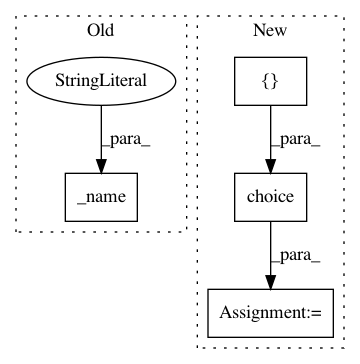

c7eedbd86349ee56a1d816a4e54dc031382da305,hpsklearn/components.py,,linear_discriminant_analysis,#Any#Any#Any#Any#Any#Any#Any#,796
Before Change
_name("solver"),
["svd", "lsqr", "eigen"]) if solver is None else solver,
shrinkage=hp.choice(
_name("shrinkage"),
["auto", None]) if shrinkage is None else solver,
priors=priors,
n_components=4 * scope.int(
After Change
def _name(msg):
return "%s.%s_%s" % (name, "lda", msg)
solver_shrinkage_dual = hp.choice(_name("solver_shrinkage_dual"),
[("svd", None),
("lsqr", None),
("lsqr", "auto"),
("eigen", None),
("eigen", "auto")])
rval = scope.sklearn_LinearDiscriminantAnalysis(
solver=solver_shrinkage_dual[0] if solver is None else solver,
shrinkage=solver_shrinkage_dual[1] if shrinkage is None else shrinkage,
In pattern: SUPERPATTERN
Frequency: 3
Non-data size: 4
Instances
Project Name: hyperopt/hyperopt-sklearn
Commit Name: c7eedbd86349ee56a1d816a4e54dc031382da305
Time: 2016-07-22
Author: chandlerx.watson@intel.com
File Name: hpsklearn/components.py
Class Name:
Method Name: linear_discriminant_analysis
Project Name: hyperopt/hyperopt-sklearn
Commit Name: a456f784eda6257b73b25fc6c4ee5682dc1341f2
Time: 2014-02-06
Author: james.bergstra@gmail.com
File Name: hpsklearn/components.py
Class Name:
Method Name: svc_sigmoid
Project Name: hyperopt/hyperopt-sklearn
Commit Name: a456f784eda6257b73b25fc6c4ee5682dc1341f2
Time: 2014-02-06
Author: james.bergstra@gmail.com
File Name: hpsklearn/components.py
Class Name:
Method Name: svc_poly